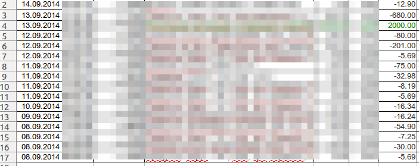

Hi, folks.
I'll try to show some interesting thing I found while playing with a gem parsing CSV and XLS files.
As we all now the simplest way to do it, is parse line by line and adding in an Array and the result is:
$ pry> items_list.map {|item| [item.made_on, item.amount, item.checksum[0..9]]};nil
[["2014-09-14", -12.9, "b994d3b9b8"],
["2014-09-13", -680.0, "0d7f128a46"],
["2014-09-13", 2000.0, "9297d662dc"],
["2014-09-12", -80.0, "746c3354cf"],
["2014-09-12", -201.0, "9ff6034ba9"],
["2014-09-12", -5.69, "6f63ac2d16"],
["2014-09-11", -75.0, "debd43bc7f"],
["2014-09-11", -32.98, "a0c0f831e4"],
["2014-09-11", -8.19, "c66d7eb43c"],
["2014-09-11", -5.69, "9bb784b332"],
["2014-09-10", -16.34, "77ff4bd783"],
["2014-09-09", -16.24, "de0630adab"],
["2014-09-08", -54.9, "7195eb1043"],
["2014-09-08", -7.25, "ce3f971476"],
["2014-09-08", -30.0, "08ab8e04b1"],
["2014-09-08", -5.69, "e348925bca"]]
=> nil
This is the result obtained on Ruby 2.1.x. Unsorted reverse list, just the same as in the file.
But we need a sorted array! And the most obvious way to sort it - is by
item.made_on
We call a ruby method sort_by, and of course with a BANG!!!
items_list.sort_by! {|item| item.made_on}
And the result is quite predictable:
$ pry> items_list.map{|item| [item.made_on, item.amount, item.checksum[0..9]]};nil
[["2014-09-08", -5.69, "e348925bca"],
["2014-09-08", -30.0, "08ab8e04b1"],
["2014-09-08", -7.25, "ce3f971476"],
["2014-09-08", -54.9, "7195eb1043"],
["2014-09-09", -16.24, "de0630adab"],
["2014-09-10", -16.34, "77ff4bd783"],
["2014-09-11", -32.98, "a0c0f831e4"],
["2014-09-11", -75.0, "debd43bc7f"],
["2014-09-11", -5.69, "9bb784b332"],
["2014-09-11", -8.19, "c66d7eb43c"],
["2014-09-12", -5.69, "6f63ac2d16"],
["2014-09-12", -201.0, "9ff6034ba9"],
["2014-09-12", -80.0, "746c3354cf"],
["2014-09-13", -680.0, "0d7f128a46"],
["2014-09-13", 2000.0, "9297d662dc"],
["2014-09-14", -12.9, "b994d3b9b8"]]
=> nil